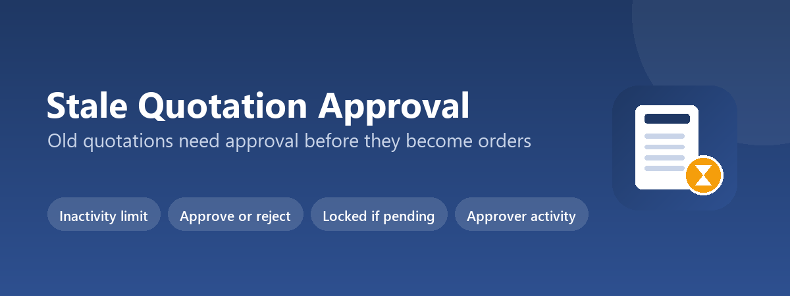

Quotations left untouched for too long need a manager's approval before they can become orders.
Prices, stock and terms change. Set a number of days in the Sales settings; when a salesperson confirms a quotation that had no activity for longer than that, it goes to Pending Approval instead of being confirmed. Approvers get an activity, approve or reject, and the salesperson is told the decision.
⏳ Inactivity ruleChoose the number of days in the Sales settings: 14 by default, and 0 switches the check off. |
✅ Approve or rejectEvery approver gets an activity; once approved the quotation can be confirmed, and the salesperson is notified either way. |
🔄 No permanent passAn approval counts as activity, so a quotation left alone again for too long needs a new approval. |
🔒 Locked while pendingOnly approvers can change the customer, lines, prices or terms of a quotation that is waiting for approval. |
💬 Real activity onlyChanges to the quotation and messages to or from the customer count; internal notes and automatic tracking do not. |
📋 Quotations to ApproveApprovers have their own menu listing every quotation that is waiting for them. |
Odoo 18.0 • Community & Enterprise • depends on Sales • Licence LGPL-3
Odoo implementation and development. thecodelegion.com